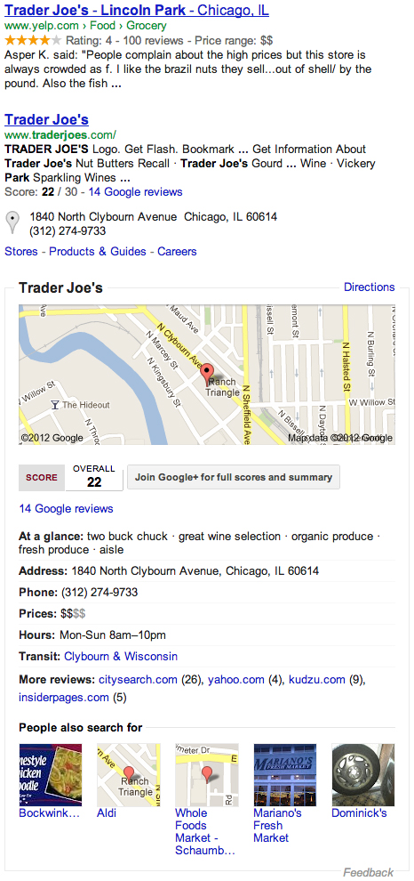

Продвинутая семантика и доступность
Семантика и доступность — это естественные части HTML по замыслу, однако они не используется в полной мере, если не применяются правильно. Знание, как писать семантический и доступный код правильно начинается с понимания того, как семантика и доступность работают и как пользователи и машины их интерпретируют. Писать семантический и доступный код невероятно сложно и это может занять много времени. Однако в долгосрочной перспективе преимущества побеждают.
Одна из наиболее важных частей, о которой следует помнить при написании семантического и доступного кода — это сделать всё возможное, чтобы использовать стандартный язык разметки. Приложите усилия, чтобы по возможности писать чистый код и гордитесь своей работой. Вообще говоря, не используйте бессмысленный элемент там, где другой элемент может придать более семантический смысл, к примеру, использование <div> там, где <h1> подходит лучше. Используйте семантические элементы и атрибуты, а также микроданные и WAI-ARIA, чтобы расширить значение вашего кода.
Кроме того, будьте адвокатом семантики и доступности. Расскажите, почему вы написали определённый код и дайте обоснование, почему некоторые модули содержимого размечены таким образом. Обозначьте цели и задачи в вашем коде и объясните, как эти цели и задачи выполняются. Практика написания семантического и доступного кода растёт, однако внедрение в целом ещё не завершено. Будьте адвокатом для кода, который вы пишете.
Мотивация для семантики
Иногда можно спросить, реально ли семантика изменит ситуацию. Вы можете услышать, что она замедляет разработку, плохо поддерживается или даже что она своевольна. Хотя это иногда и так, вам по-прежнему необходимо сохранить целостность и продолжить писать по возможности лучший код, потому что семантика вкладывает больший смысл в написании кода.
Важным фактом является то, что семантика в значительной степени полезна всем. Для начинающих семантика наделяет содержимое однозначным смыслом. Семантика придаёт содержимому устойчивую структуру и значение, а также в угоду доступности предоставляет более качественный пользовательский интерфейс и дополнительную информацию для вспомогательных технологий. Поиск и глобализация в большей степени связаны с семантикой, что позволяет проще обслуживать контент на международном уровне и делает его более дружественным поисковой системе. Если это недостаточно, семантика также способствует совместимости операционных систем, что позволяет обмениваться и пользоваться информацией на различных платформах и устройствах.
Можно с уверенностью сказать, что семантика важна и она здесь надолго. Если кратко подытожить, семантика обеспечивает:
- однозначный смысл для содержимого;
- доступность;
- поиск и глобализацию;
- совместимость.
Структурная семантика
В руководстве для начинающих мы обсудили использование структурной семантики, в частности, применение элементов <header>, <nav>, <article>, <section>, <aside> и <footer>. Эти элементы обеспечивают дополнительный фоновый контекст для их содержимого, сообщая своё основное значение браузерам и другим устройствам. Это важно, так как они предлагают лучший способ наметить структуру страницы и это более значимое решение чем <div>.
Скрытие содержимого
Время от времени вы пожелаете скрыть блок содержимого на странице, возможно, показывая или скрывая элемент в зависимости от статуса пользователя. К примеру, сообщение об успешном выполнении скрывается от пользователя, пока он не выполнит желаемое действие. Чаще всего это делается с помощью записи display: none. Хотя это действительно работает, но семантически некорректно.
Лучшим вариантом является применение логического атрибута hidden, который является глобальным атрибутом, доступным для всех элементов. Функционально он выполняется так же, как декларация CSS, но семантически представляет собой элемент, который должен быть скрыт или до поры до времени проигнорирован. Экранные читалки и другие устройства распознают атрибут, временно пропуская элемент, чего они не могут сделать с декларацией CSS.
<!-- Хорошо -->
<div hidden>...</div>
<!-- Не хорошо -->
<div style="display: none;">...</div>Представьте себе, что слепой пользователь пытается заполнить форму, и первая часть содержимого, ещё до заполнения формы — это сообщение об успешном выполнении. Это плохой пользовательский опыт и он может быть легко исправлен с помощью надлежащей семантики.
Текстовая семантика
Большая часть содержимого в Интернете живет в тексте и мы в первую очередь пролистываем Интернет в поисках этого содержимого. Использование правильной семантической разметки для текста помогает пользователям проще находить то, что им нужно.
Жирный текст
Есть несколько способов, как сделать текст жирным, в том числе несколько элементов и стилевое свойство font-weight. Два основных элементов, используемых в данном случае, включают в себя <strong> и <b>. Хотя эти два элемента имеют одинаковое представление, у них совершенно разные семантические значения.
Элемент <strong> описывает текст, который имеет важное значение. С другой стороны, элемент <b> определяет текст, который должен быть стилистически выделен без важности. Вообще говоря, элемент <b> следует использовать исключительно в качестве щипцов для завивки, чтобы изменить представление элемента, тогда как элемент <strong> должен быть использован для идентификации существенно важного текста.
<!-- Важное значение -->
<strong>Внимание:</strong> падающие камни.
<!-- Стилистическое выделение -->
Для этого рецепта понадобятся <b>бекон</b> и <b>майонез</b>.Демонстрация жирного текста
Курсивный текст
Курсивный текст работает в той же области, что и жирный текст, где мы можем использовать несколько элементов или стилевое свойство font-style для достижения желаемого представления. Для курсивного текста наиболее часто используются два элемента — <em> и <i>. Опять же, у них одинаковое представление, но совершенно разные семантические значения.
Элемент <em> акцентирует сильное выделение на тексте, а элемент <i> определяет текст, который будет выражен альтернативным голосом или тоном. Использование элемента <em> действительно ведёт к выделению текста с добавлением важности. С другой стороны, элемент <i> в основном используется в диалоге или прозе, выделяя текст без какого-либо добавления акцента или важности.
<!-- Сильное выделение -->
Я <em>люблю</em> Чикаго!
<!-- Альтернативный голос или тон -->
Имя <i>Шэй</i> означает подарок.Демонстрация курсивного текста
Использование <i> для иконок
В последнее время наблюдается небольшое движение фронтенд-разработчиков к использованию элемента <i> для включения иконок на странице, в частности, как это видно в Bootstrap. Элемент <i> используется в качестве хука, а затем его класс определяет, какую иконку фонового изображения применить к элементу. В зависимости от того, насколько близко вы хотите следовать за семантикой, это может быть приемлемой практикой или нет.
Подчёркивание текста
В продолжении шаблона, в котором у нескольких элементов одинаковое представление, подчёркнутый текст ничем от них не отличается. Есть разные элементы, которые мы можем использовать, а также стилевое свойство text-decoration. В нашем случае два основных элемента, применяемых для подчёркивание текста — это <ins> и <u>.
Элемент <ins> используется для идентификации текста, который был недавно добавлен к документу, а элемент <u> просто указывает на невнятное произношение.
Для более семантического кода, элемент <ins> может быть использован с атрибутами cite и datetime. Атрибут datetime указывает, когда содержимое было добавлено в документ, а атрибут cite предлагает машиночитаемый исходник, передающий дополнительную ссылку на, возможно, документацию или запрос билета.
Элемент <u> обычно используется в качестве текстовой метки для правильного имени, часто на другом языке или указывает на орфографические ошибки.
Подчёркнутый текст требует внимательности, так как его можно спутать с гиперссылкой. По умолчанию гиперссылки подчёркнуты и это стало стандартной практикой дизайна. Подчёркнутый текст, который не является гиперссылкой, может запутать пользователей и немного разочаровать их. Используйте подчёркивание с осторожностью.
<!-- Добавлено в документ -->
<ins cite="http://learn.shayhowe.com" datetime="2012-07-01">
Обновлено: Этот сайт теперь содержит продвинутое руководство.
</ins>
<!-- Невнятное произношение -->
<u>Urushihara Yuuji</u> выиграл <u>Sasuke 27</u>.Демонстрация подчёркнутого текста
Зачёркнутый текст
Зачёркнутый текст следует тому же шаблону, что и раньше, где могут быть использованы различные элементы, так и стилевое свойство text-decoration. Это свойство применяется наиболее часто, а также элементы <del> и <s>.
Элемент <del> используется для указания, что текст удалён или перемещён из документа. Как и в случае с элементом <ins>, он может быть использован с атрибутами cite и datetime. Каждый из них сохранил прежнее смысловое значение — cite указывает на ресурс, на котором объясняются изменения, а datetime показывает, когда содержимое было удалено из документа.
Элемент <s> определяет текст, который уже неточный или неактуальный.
<!-- Удалено из документа -->
Я заядлый велосипедист, <del cite="http://shayhowe.com" datetime="2012-07-01">скейтбордист</del> и дизайнер.
<!-- Неточный или неактуальный -->
<s>$24.99</s> $19.99Демонстрация зачёркнутого текста
Выделенный текст
Чтобы выделить текст в справочных целях следует использовать элемент <mark>. Добавленный в HTML5 элемент <mark> обеспечивает чистый, семантический способ определить текст специально для справочных целей, без необходимости использовать несемантические текстовые элементы.
<!-- Выделено для справочных целей -->
Результаты поиска для <mark>'чикаго'</mark>.Демонстрация выделенного текста
Аббревиатуры
Аббревиатуры — это сокращённая форма фразы, может быть семантически размечена в HTML с помощью элемента <abbr>. Элемент <abbr> должен использоваться вместе с атрибутом title, который включает в себя полное значение аббревиатуры. Первоначально применялся элемент <acronym>, чтобы отличать аббревиатуры от сокращений, но с тех пор является устаревшим и не должен использоваться.
<abbr title="HyperText Markup Language">HTML</abbr>
<abbr title="Cascading Style Sheets">CSS</abbr>Демонстрация аббревиатур
Верхний и нижний индексы
Верхние и нижние индексы могут быть размечены с помощью элементов <sup> и <sub>, соответственно. Важно отметить, что эти элементы должны быть зарезервированы для типографских соглашений, а не для презентационных задач.
<!-- Нижний индекс -->
H<sub>2</sub>O
<!-- Верхний индекс -->
1<sup>ое</sup> местоДемонстрация верхнего и нижнего индексов
<meter> и <progress>
Чтобы оценить масштаб или указать прогресс должны использоваться элементы <meter> и <progress>. Элемент <meter> применяется для измерения фиксированного значения, которое не меняется со временем, в то время как элемент <progress> показывает прогресс с увеличением величины.
Элемент <meter> может быть использован с атрибутами min, max, low, high, optimum и value. Атрибуты min и max устанавливают нижние и верхние границы диапазона, тогда как атрибут value устанавливает точное измеренное значение. Атрибуты low и high определяют, что следует считать нижней и верхней частью диапазона, в то время как значение optimum определяет наиболее выгодную часть диапазона, которая может находиться в нижней или верхней части.
Элемент <progress> показывает прогресс, а не фиксированную величину. Он, в частности, представляет завершение задачи, либо сколько осталось до завершения или что было завершено до сих пор. Есть два атрибута, которые могут быть применены к элементу — value и max. Атрибут value указывает на то, где в настоящее время находится прогресс, а атрибут max указывает на то, когда прогресс будет достигнут.
<!-- Счётчик -->
<meter value="7" max="10">7 звёзд</meter>
<meter value="47" min="0" max="105" low="5" high="65" optimum="45">Движение автомобиля, миль/час.</meter>
<!-- Прогресс -->
Завершено на <progress value="50" max="100">50%</progress>.
<progress value="90" min="0" max="100">Держитесь, осталось чуть-чуть.</progress>Демонстрация <meter> и <progress>
Время и адрес
Представление времени и адреса в HTML может быть выполнено с помощью элементов <time> и <address>, соответственно. Элемент <time> может быть использован с атрибутом datetime или без него, в зависимости от того, как отформатирован текст внутри элемента. Если содержимое отформатировано с правильной датой и временем, то атрибут datetime может быть опущен. Кроме того, если время представляет собой дату или время публикации, то должен быть задействован логический атрибут pubdate.
Элемент <address> может быть использован для хранения любой контактной информации, в том числе почтового адреса, а также веб-сайта или адреса электронной почты. Он не должен включать в себя любую дополнительную информацию, кроме контактной информации. Другое содержимое должно размещаться за пределами элемента <address>.
<!-- Время -->
<time>2011-08-24</time>
<time datetime="2011-08-24" pubdate>24 августа 2011</time>
<time datetime="15:00">15:00</time>
<time datetime="2011-08-24T15:00">24 августа 2011 в 15:00</time>
<!-- Адрес -->
<address>
<strong>Шэй Хоу</strong><br>
<a href="http://learn.shayhowe.com">http://learn.shayhowe.com</a><br>
<a href="mailto:hello@awesome.com">hello@awesome.com</a><br>
600 W. Chicago Ave.<br>
Suite 620<br>
Chicago, IL 60654<br>
USA
</address>Демонстрация времени и адреса
<pre> и <code>
Представление фрагментов кода или примеров на странице может быть выполнено с помощью элементов <code> или <pre> или их комбинации. Элемент <code> обычно используется для представления фрагмента кода и по умолчанию отображается моноширинным шрифтом. Элемент <code> является строчным элементом и может быть использован в абзацах текста или других блочных и строчных элементах.
Для больших блоков кода может быть использован элемент <pre> в сочетании с элементом <code>. Элемент <pre> представляет собой предварительно отформатированный текст и будет отображать текст точно так, как он набирался, с учётом пробелов. Вложение элемента <code> в элемент <pre> семантически определяет большие фрагменты кода, отображаемые в виде блока, с учётом пробелов.
<!-- Строчный пример кода -->
Используйте элемент <code>article</code>.
<!-- Большой блочный фрагмент кода -->
<pre><code>body {
color: #666;
font: 14px/20px Arial, sans-serif;
}</code></pre>Демонстрация <pre> и <code>
Строки и переносы слов
Время от времени вы можете захотеть включить перенос в строке текста, в этом случае может быть использован элемент <br>. У этого элемента нет закрывающего тега, только открывающий. В XHTML элемент <br> является самозакрывающимся и включает обратную черту — <br />.
Переносы строк не должны использоваться для тематической группировки содержимого. Абзацы или другие элементы подходят для этого лучше. Переносы строк специально используются там, где они выступают как часть содержимого, например, в адресах и стихах.
В дополнение к переносу строк, вы можете также воспользоваться возможностью переносить слова через элемент <wbr>. Применение элемента <wbr> в середине слова гарантирует, что, если слово нужно разбить на две строки, это будет сделано в разборчивой форме.
<!-- Перенос строки -->
600 W. Chicago Ave.<br>
Chicago, IL 60654<br>
USA
<!-- Перенос слова -->
http://shay<wbr>howe.com Демонстрация переноса строк и слов
Побочные замечания
Первоначально элемент <small> использовался для визуализации текста путём уменьшения размера шрифта на единицу, по сравнению со шрифтом по умолчанию, чисто для презентационных целей. Как мы знаем, презентации и стиль должны жить только в CSS, а не в HTML. В HTML5 элемент <small> сохранил отображение меньшим размером шрифта, однако семантически переопределён в качестве побочного замечания или мелкой надписи. Он часто включает в себя информацию об авторских правах или юридические данные.
<!-- Побочные замечания или мелкая надпись -->
<small>© 2012 Шэй Хоу</small>Демонстрация побочных замечаний
Цитаты
Руководство для начинающих обсуждает цитаты и когда использовать соответствующие элементы <cite>, <q> или <blockquote>. В качестве быстрого напоминания, элемент <cite> ссылается на название работы, элемент <q> определяет диалог или прозу, а элемент <blockquote> используется для вывода больших цитат, обычно из внешних источников.
Атрибуты гиперссылок
Руководство для начинающих также описывает гиперссылки и их различное поведение. Что, однако, не описано, так это некоторые семантические преимущества гиперссылок, в частности, с помощью атрибутов download и rel.
Атрибут download
Атрибут download говорит браузеру незамедлительно скачать файл, а не использовать поведение по умолчанию для перехода к файлу. В качестве примера, если ссылка с атрибутом href указывает на изображение, браузер предложит пользователю скачать изображение, вместо того, чтобы открыть изображение в браузере.
Атрибут download может служить в качестве логического атрибута, загружая файл как есть, или он может содержать значение, которое станет именем файла после загрузки. Использование конкретного значения позволяет называть файл на вашем сервере как вы пожелаете, в то же время предоставляя пользователям значимое название.
<!-- Логический -->
<a href="twitter-logo.png" download>Twitter Logo</a>
<!-- Со значением -->
<a href="twitter-logo.png" download="Logo">Twitter Logo</a>Демонстрация атрибута download
Атрибут rel
Для любых гиперссылок с атрибутом href вы можете также включать атрибут rel. Этот атрибут определяет отношение между текущим документом и документом, на который ведёт ссылка. Например, для ссылки на страницу с авторскими правами значение атрибута rel должно быть copyright.
<a href="legal.html" rel="copyright">Правила использования</a>
<a href="toc.html" rel="contents">Содержание</a>Некоторые популярные значения атрибута rel включают в себя:
- alternate
- author
- bookmark
- help
- license
- next
- nofollow
- noreferrer
- prefetch
- prev
- search
- tag
Микроданные
Микроданные — это расширение HTML с вложенными группами пар имя-значение, которые позволяют машинам, в том числе браузерам и поисковым системам, собирать дополнительную семантику и информацию для структурированного содержимого. Добавление микроданных на свой сайт происходит с помощью заранее заданных атрибутов и значений. Эти атрибуты и значения затем будут интерпретированы и расширены, как и предполагалось. В настоящее время наиболее популярные виды использования микроданных находятся в контактной информации и событиях календаря, однако есть модели для продуктов, обзоров и др.
Одним из примеров работы микроданных является Google, где микроданные интерпретируется и используется в результатах поиска для отображения более релевантных данных. Часто выполнение поиска для местоположения компании даёт адрес и последующую контактную информацию в результатах. Скорее всего, эта информация будет вытащена из микроданных, написанных на существующем сайте.

Рис. 10.01. Google использует микроданные для определения местоположения компании, контактной информации, времени работы, цен, оценок и др.
Микроданные, микроформаты и RDFa
На самом деле есть несколько богатых стандартов структурирования данных, в том числе микроданные, микроформаты и RDFa. Все они имеют свои плюсы и минусы и все они ещё жизнеспособны на практике.
Микроданные — это рекомендуемый формат от Google и других поисковых систем, а также часть спецификации HTML5. Микроданные позаимствовали находки из микроформатов и RDFa, основываются на окружающем дизайне, таким образом, стремятся быть надёжным выбором и описаны здесь. Однако рекомендуем вам проделать собственные исследования, проверить пульс сообщества, найти то, что лучше всего работает в вашей ситуации и применять это. Использовать один из этих стандартов существенно лучше, чем не использовать. Найдите то, что даст максимальную пользу вашим пользователям.
Изложение микроданных
Микроданные определяется с помощью трёх основных атрибутов — itemscope, itemtype и itemprop.
Логический атрибут itemscope объявляет область каждого элемента микроданных. Добавьте этот атрибут к родительскому элементу, в котором должна находиться вся информация микроданных, относящаяся к этому элементу.
После того, как вы определили область, добавьте атрибут itemtype, чтобы указать, какой словарь микроданных следует использовать. Вообще говоря, некоторые наиболее популярные типы микроданных изложены на Schema.org. Есть, однако, и другие сайты, которые устанавливают дополнительные и разные типы элементов. Вы также можете написать свой собственный тип элементов, если есть такая необходимость.
<section itemscope itemtype="http://schema.org/Person">
...
</section>После того, как область и тип элемента были определены, могут быть установлены свойства. Эти свойства обозначены различными элементами, которые включают атрибут itemprop. Значение этого атрибута определяет, на что указывает свойство, а содержимое внутри самого элемента обычно задаёт значение свойства.
<section itemscope itemtype="http://schema.org/Person">
<h1 itemprop="name">Шэй Хоу</h1>
</section>Некоторые элементы, тем не менее, не получают значение itemprop из содержимого внутри элемента. Вместо этого, их значение определяется из значения другого атрибута элемента. В таблице ниже приведены эти единовременные элементы и какой атрибут используется для значения их свойства.
| Элемент | Значение |
|---|---|
| <meta> | Атрибут content |
| <audio>, <embed>, <iframe>, <img>, <source>, <video> | Атрибут src |
| <a>, <area>, <link> | Атрибут href |
| <object> | Атрибут data |
| <time> | Атрибут datetime |
Микроданные человека
При обращении к человеку должна использоваться библиотека микроданных Person. Ниже приведён пример того, как может выглядеть разметка микроданных человека. Пожалуйста, обратите внимание, что внутри элемента Person используется элемент PostalAddress для почтового адреса. Кроме того, пожалуйста, обратите внимание на различные свойства элемента и соответствующие им значения.
<section itemscope itemtype="http://schema.org/Person">
<strong itemprop="name">Шэй Хоу</strong>
<img src="shay.jpg" itemprop="image" alt="Шэй Хоу">
<div itemprop="jobTitle">Дизайнер и фронтенд-разработчик</div>
<a href="http://www.shayhowe.com" itemprop="url">shayhowe.com</a>
<div itemprop="telephone">(555) 123-4567</div>
<a href="mailto:shay@awesome.com" itemprop="email">shay@awesome.com</a>
<address itemprop="address" itemscope itemtype="http://schema.org/PostalAddress">
<span itemprop="streetAddress">600 W. Chicago Ave.</span>
<span itemprop="addressLocality">Chicago</span>,
<abbr itemprop="addressRegion" title="Illinois">IL</abbr>
<span itemprop="postalCode">60654</span>
</address>
</section>Микроданные человека
Пожалуйста, имейте в виду, что этот код для отдельного человека. Если вы хотите указать организацию, то должна использоваться конкретная библиотека микроданных Organization.
Микроданные событий
Микроданные событий очень похожи на микроданные человека, однако используют вместо этого библиотеку микроданных Event. Общие свойства похожи между ними и могут быть определены, как некоторые вложенные типы элементов.
<section itemscope itemtype="http://schema.org/Event">
<a itemprop="url" href="#">
<span itemprop="name">Styles Conference</span>
</a>
<time itemprop="startDate" datetime="2014-08-24T09:00">Воскресенье, 24 августа 2014 в 9:00</time>
<div itemprop="location" itemscope itemtype="http://schema.org/Place">
<a itemprop="url" href="http://www.thechicagotheatre.com/">Chicago Theatre</a>
<address itemprop="address" itemscope itemtype="http://schema.org/PostalAddress">
<div itemprop="streetAddress">175 N. State St.</div>
<span itemprop="addressLocality">Chicago</span>,
<abbr itemprop="addressRegion" title="Illinois">IL</abbr>
<span itemprop="postalCode">60601</span>
</address>
</div>
</section>Микроданные событий
Микроданные предлагают много способов дальнейшего расширения содержимого страницы. Мы лишь коснулись их поверхностно. Более подробную информацию о микроданных можно найти в книге Погружение в HTML5 и на сайте WHATWG.
WAI-ARIA
WAI-ARIA (Web Accessibility Initiative — Accessible Rich Internet Applications) является спецификацией, которая помогает сделать веб-страницы и приложения более доступными для людей с ограниченными возможностями. В частности, WAI-ARIA помогает определить роли (что блоки содержимого делают), состояния (как блоки содержимого настроены), а также дополнительные свойства для поддержки вспомогательных технологий.
Роли
Установка ролей WAI-ARIA осуществляется с помощью атрибута role. Эти роли затем указывают, что определённые элементы и блоки содержимого делают на странице.
<header role="banner">...</header>Роли WAI-ARIA делятся на четыре различные категории: абстрактные, виджеты, структура документа и ориентиры. В этом уроке мы сосредоточимся в основном на структуре документа и ориентирах. Роль структуры документа определяет организационную структуру содержимого на странице, в то время как ориентиры определяют регионы страницы. Конкретные значения ролей для каждой из этих категорий показаны ниже.
Роли структуры документа
- article
- columnheader
- definition
- directory
- document
- group
- heading
- img
- list
- listitem
- math
- note
- presentation
- region
- row
- rowheader
- separator
- toolbar
Ориентиры
- application
- banner
- complementary
- contentinfo
- form
- main
- navigation
- search
HTML5 представил несколько новых структурных элементов, которые обычно соответствуют ролям структуры документа и ориентирам. Как именно эти роли совпадают в отношении конкретных элементов можно увидеть ниже. Пожалуйста, обратите внимание, элементы <header> и <footer> не подразумевают роль и допустимые роли для этих элементов могут быть использованы на странице только один раз. Тем не менее, если у вас есть несколько элементов <header> и <footer> на странице, должны быть применены роли banner и contentinfo к элементам, непосредственно связанных с документом с точки зрения верхнего уровня, а не к элементам, вложенных в других областях структуры документа.
| Элемент | Предполагаемая роль | Допустимые роли |
|---|---|---|
| <article> | article | application, article, document или main |
| <aside> | complementary | complementary, note или search |
| <footer> | — | contentinfo (один раз на страницу) |
| <header> | — | banner (один раз на страницу) |
| <nav> | navigation | navigation |
| <section> | region | alert, alertdialog, application,contentinfo, dialog, document, log, main,marquee, region, search или status |
Комбинация элементов с их согласованными ролями в HTML5 будет выглядеть как в следующем фрагменте кода.
<header role="banner">
<nav role="navigation">...</nav>
</header>
<article role="article">
<section role="region">...</section>
</article>
<aside role="complementary">...</aside>
<footer role="contentinfo">...</footer>Состояния и свойства
В сочетании с ролями WAI-ARIA существуют также состояния и свойства, которые помогают информировать вспомогательные технологии, как настроено содержимое. Подобно ролям, состояния и свойства разбиты на четыре категории, в том числе атрибуты виджета, атрибуты живого региона, атрибуты drag-and-drop и атрибуты отношений.
Атрибуты виджета поддерживают роли виджетов и являются специфическими для пользовательского интерфейса и там, где от пользователя требуются действия. Атрибуты живого региона могут быть применены к любому элементу и используются для обозначения изменений содержимого для вспомогательных технологий, к примеру, на странице предупреждений и уведомлений. Атрибуты drag-and-drop информируют об элементах drag-and-drop и обеспечивают альтернативное поведение для вспомогательных технологий. И, наконец, атрибуты отношений описывают отношения между элементами, когда структура документа не может быть определена.
Ресурсы и ссылки
- Text-Level Semantics на WHATWG
- Existing rel Values на Microformats.org
- Organization of Schemas на Schema.org
- Микроданные на Погружение в HTML5
- WAI-ARIA Overview на W3.org
- The Roles Model на W3.org
См. также

Все материалы сайта доступны по лицензии Creative Commons «Attribution-NonCommercial» («Атрибуция — Некоммерческое использование») 4.0 Всемирная, если не указано иное.